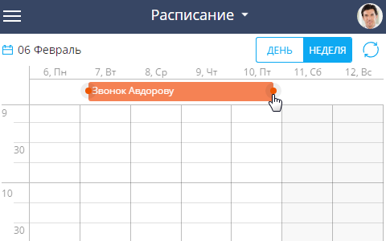

Раздел Активности мобильного приложения используется для управления рабочим временем и учета выполнения текущих задач (Рис. 1).
Задачи могут отображаться как в виде электронного ежедневника — расписания, так и в виде списка. В режиме расписания отображаются задачи, по которым вы являетесь ответственным, а также те, в которых вы добавлены на деталь Участники. В режиме списка отображаются только те задачи, по которым вы являетесь ответственным. Выбор представления (в виде списка или расписания) осуществляется в верхней части рабочей области приложения.
В зависимости от размера экрана мобильного устройства расписание по умолчанию отображается на текущий день либо на текущую неделю. При необходимости вы можете изменить период отображения расписания.
Чтобы изменить период для отображения задач в расписании, нажмите кнопку и выберите необходимый временной интервал.
Для быстрого переключения между ближайшими днями нажмите на свободное место в расписании и проведите вправо для перехода к следующему дню или влево для перехода к предыдущему.
Текущее время в расписании отмечено оранжевой чертой.
Все активности в расписании отображаются в виде прямоугольников, высота которых соответствует длительности активности.
В левой части области расписания отображаются временные интервалы расписания.
Цвет активностей в расписании зависит от их состояния и времени выполнения:
-
Красный — активности не в конечном состоянии, время завершения активностей уже прошло.
-
Синий — активности не в конечном состоянии, время завершения которых еще не прошло (запланированные или находящиеся в работе).
-
Серый — активности в конечном состоянии (завершенные или отмененные).
Просмотреть расписание другого сотрудника
Возможность просмотра расписания другого ответственного доступна в online-режиме.
Чтобы просмотреть текущее расписание другого ответственного:
-
Нажмите кнопку Изменить, которая расположена в верхнем правом углу мобильного приложения (Рис. 2).
Рис. 2 — Смена ответственного для просмотра расписания -
Выберите ответственного в списке.
-
Чтобы вернуться в свое расписание, в списке выбора с ответственными нажмите кнопку Мои активности.
Добавить задачу
Чтобы создать новую задачу в разделе Активности, нажмите кнопку  . После этого внесите необходимую информацию и нажмите кнопку Сохранить.
. После этого внесите необходимую информацию и нажмите кнопку Сохранить.
При работе в мобильным приложении вы можете создавать многодневные задачи (задачи, которые выполняются на протяжении нескольких дней).
Чтобы создать многодневную задачу:
-
Выделите задачу в расписании.
-
Перетащите задачу на панель с днями недели.
-
Удерживая значок окончания активности , растяните активность на необходимый диапазон (Рис. 3).
Рис. 3 — Создание многодневных задач
Действия с задачами
Вы можете изменить длительность активности. Для этого нажмите на активность и, удерживая за обозначение окончания активности , перетащите до нужной отметки времени. Чтобы перенести активность на другое время, перетяните активность на нужный временной интервал.
Для изменения состояния задачи в расписании перейдите в режим редактирования активности и выберите нужное значение в поле Состояние.
В случае, если сразу необходимо отметить задачу как выполненную, нажмите на задаче в расписании и далее на кнопку .
Чтобы вернуть выполненную задачу в начальное состояние, выберите в расписании задачу и нажмите кнопку (Рис. 4).
Меню действий используется для копирования, удаления и разделения задач. Для отображения команд меню выделите задачу и нажмите кнопку .
Например, вы можете разделить задачу, если в расписании время нескольких активностей пересекается. При этом учитывается время окончания и начала пересекающихся задач.
При копировании задачи из расписания также копируются записи детали Участники. При копировании из карточки просмотра активности создается новая карточка, в которой вы можете внести всю необходимую информацию.
В online-режиме вы также можете отобразить в расписании активности, созданные в основном приложении Creatio. Для этого используйте команду Обновить .